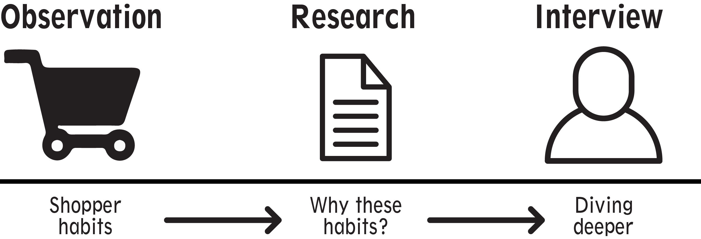
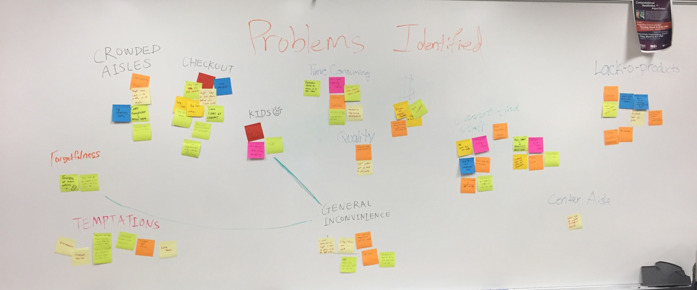

The goal is to break down the grocery shopping process and understand the needs of shoppers. Using this understanding of the shopping process, our team was set to design a way to optimize the experience for shoppers, while not detrimenting the store itself or disrupting their current monetization strategies.
My role: For this project, I specifically sketched user interfaces for our prototype, conducted usability tests, overviewed project management and timeframe and developed documentation.
After observation and research, we moved to affinity diagramming to categorize the areas of focus for shoppers
Crowded aisles: High traffic times cause cluttered aisles; shopping cart size plays role
Checkouts: Slow and cluttered; self-checkout can grow busy
Temptations: Product placement; store mechanism for revenue
Forgetfulness: Lack of grocery list - 15% of consumers; confusing aisle layouts
Money: Item comparison; store-brands are cheaper but lose to brand loyalty
Item Location: Large market sizes; layout changes; mismatched item placement
We decided to tackle the issue of consumers comparing items based on brand and price. We aimed to find a way that would not only help the consumers, but the stores using our designs as well.
Grocery stores have been designed in a very specific way, with many aspects to the shopping experience taken into account. They are layed out to increase impulse shopping, and to give emotions to consumers the moment they walk through the door (notice when you first step in you almost always see the vegetables and flowers). Through usability testing and refinement, we were able to come to a possible addition to the shopping experience. See below to view the entirety of the project!